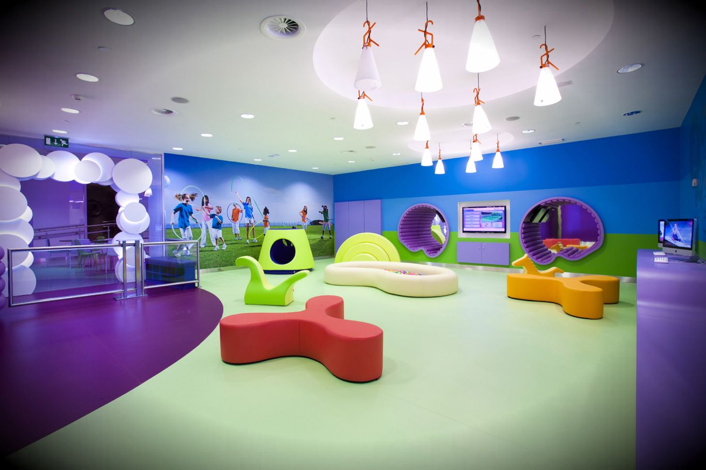
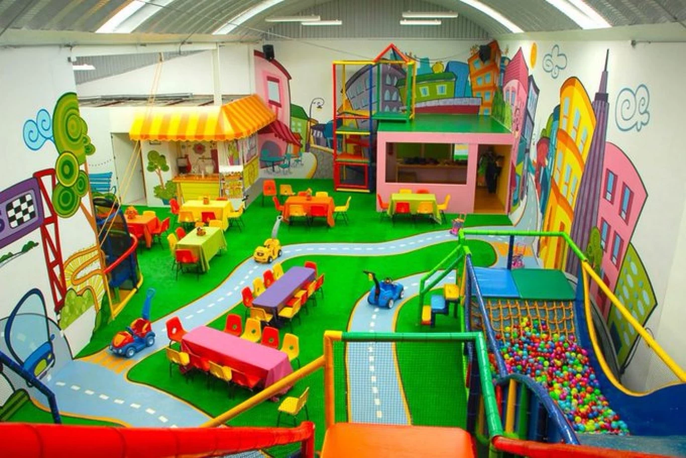
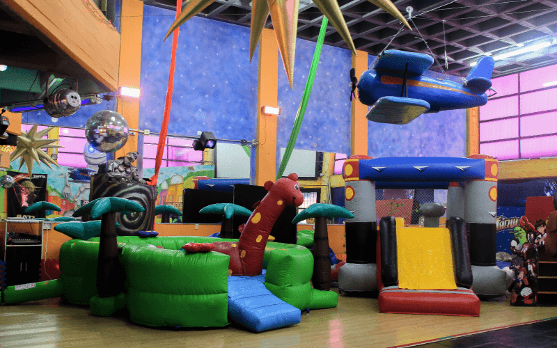
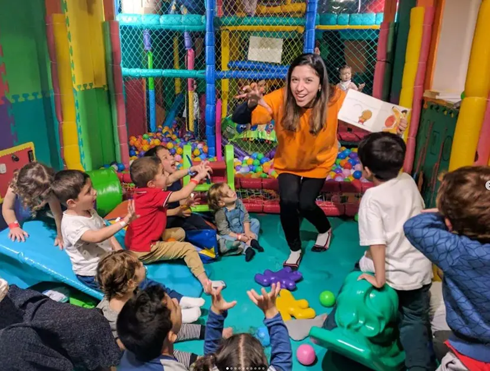

Bienvenidos a nuestro espacio, donde la diversión y la alegría están garantizadas. Contamos con espacios pensados y adaptados para eventos de niños y adolescentes, ideales para celebrar cumpleaños, bautismos, babyshowers y eventos escolares.
Le ofrecemos la mejor animación dirigida a su requerimiento, con juegos que permiten la destreza y despiertan la creatividad a través de la imaginación con diferentes objetos colores músicas, títeres y más
Contamos con un equipo de profesionales que se encargará de que su evento sea inolvidable. Nuestros salones están equipados con todo lo necesario para garantizar la diversión y el entretenimiento de los más pequeños.
¡No dude en contactarnos para más información!
Galería de salones
Consulte por la opción que más se ajuste a sus necesidades!
Salón A: Capacidad para 50 personas, incluye juegos inflables y área de descanso.

Base de 20 chicos y 15 adultos
2 Animadores
Inflable y metegol según la edad
2 Camareras hasta 15 Adultos
Bolsitas de golosinas
Tobogán luminoso con golosinas.
Salón B: Capacidad para 100 personas, incluye animaciones recreativas, temáticas y shows de magia.

Base de 30 chicos y 20 adultos
2 Animadores
Inflable y metegol según la edad
2 Camareras hasta 20 Adultos
Bolsitas de golosinas
Tobogán luminoso con golosinas.
Salón C: Capacidad para 150 personas, incluye juegos de agua y actividades al aire libre.

Base de 40 chicos y 30 adultos
3 Animadores
Juegos de agua y actividades al aire libre
3 Camareras hasta 30 Adultos
Bolsitas de golosinas
Tobogán luminoso con golosinas.
Salón D: Capacidad para 200 personas, incluye juegos de agua y actividades al aire libre.

Base de 50 chicos y 40 adultos
5 Animadores
Juegos de agua y actividades al aire libre
3 Camareras hasta 40 Adultos
Bolsitas de golosinas y souvenirs personalizados
Tobogán luminoso y pista de baile.